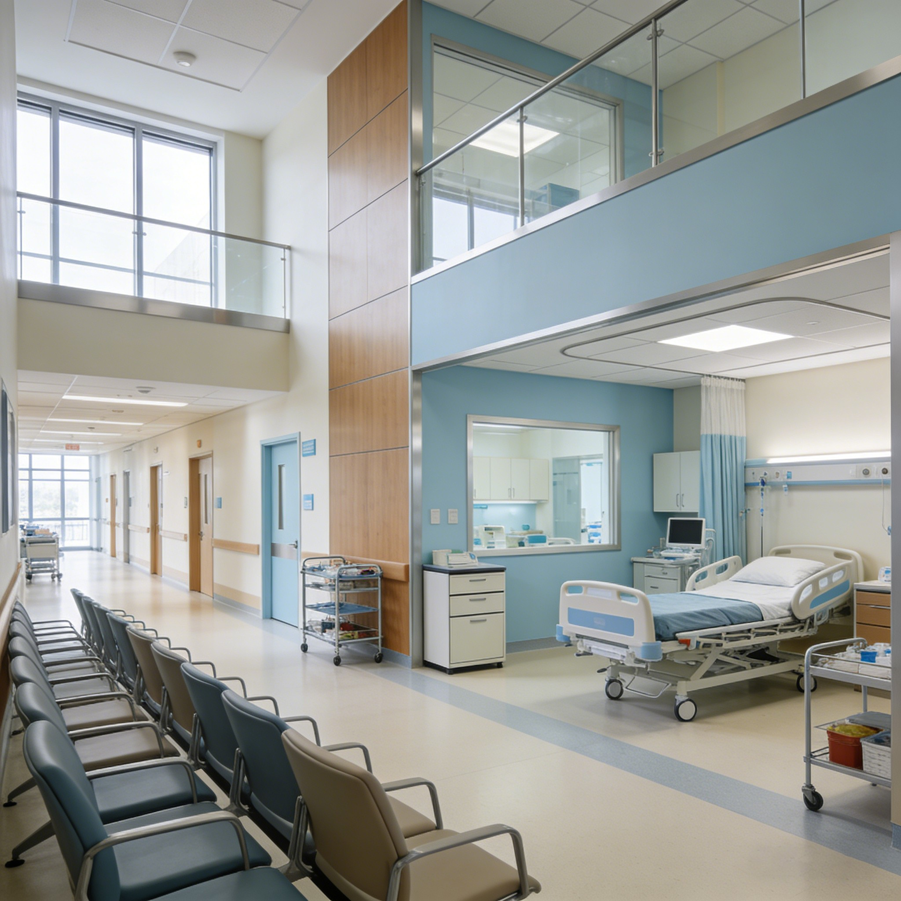
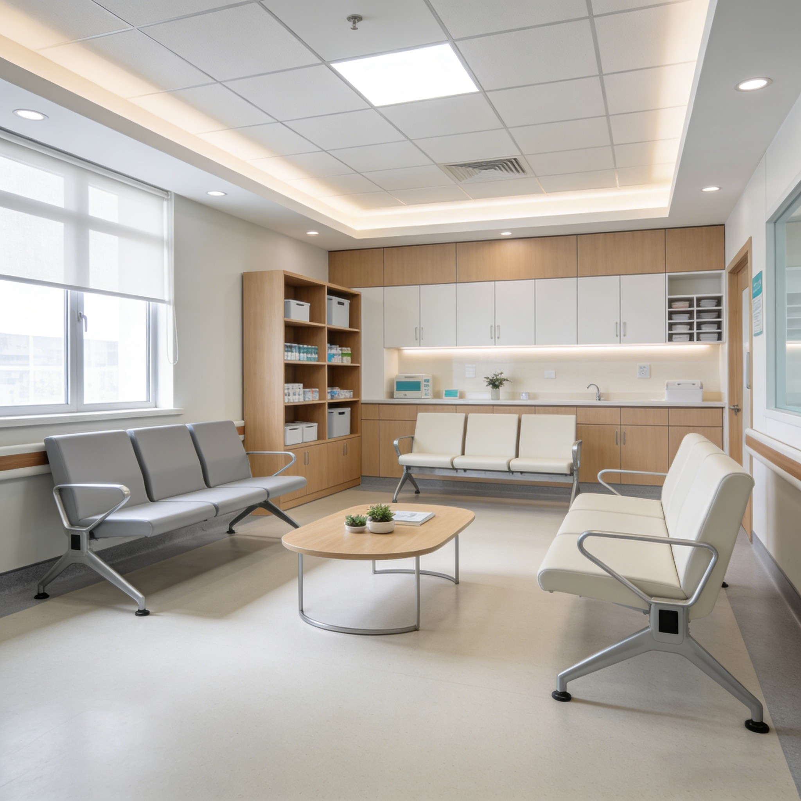
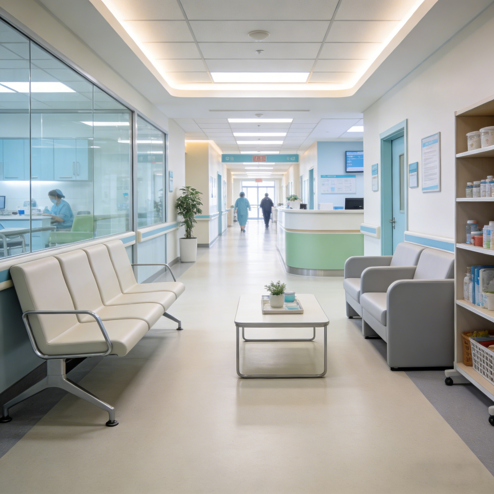
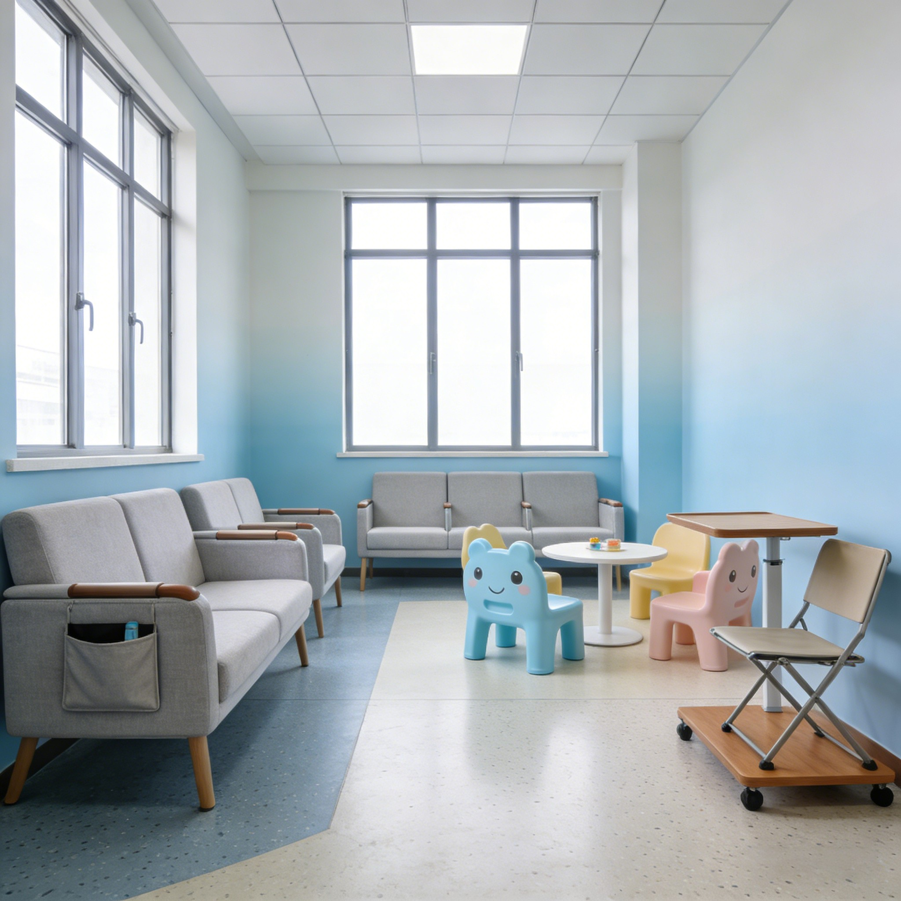

Este banco de espera de dos plazas está diseñado para la sala de espera de consultorios privados, clínicas pequeñas y despachos profesionales. La estructura resistente, el tapizado de fácil limpieza y el diseño elegante crean un espacio de espera cómodo y acogedor para los pacientes y sus acompañantes.
Las dos plazas del banco tienen una separación de 60 cm, suficiente para que dos personas adultas se sienten con comodidad sin estar pegadas. El respaldo contorneado ofrece soporte lumbar adecuado durante esperas de 15-30 minutos.
El tapizado en vinilo de fácil limpieza se limpia con un paño húmedo en segundos. No absorbe manchas y resiste el desgaste diario, manteniendo su aspecto impecable durante años de uso en la sala de espera.
La estructura de acero con patas de madera o metal soporta hasta 200 kg por plaza. El banco es estable y no se tambalea, incluso cuando una persona se sienta de forma abrupta o se apoya en el reposabrazos para levantarse.
El diseño elegante con líneas limpias y acabados en tonos cálidos se integra en cualquier estilo de decoración: clásico, moderno o minimalista. Los acabados disponibles combinan con el resto del mobiliario del consultorio.
El banco se entrega con patas regulables que compensan desniveles del suelo. El montaje es muy sencillo: se atornillan las patas a la estructura y el banco queda listo para usar en menos de 15 minutos.
| Modelo | Plazas | Medidas | Estilo |
|---|---|---|---|
| Compacto | 2 plazas | 120 × 55 × 80 cm | Moderno |
| Estándar | 3 plazas | 180 × 55 × 80 cm | Clásico |
| Individual | 1 plaza | 60 × 55 × 80 cm | Minimalista |
| Con mesa | 2 + mesa | 160 × 55 × 80 cm | Funcional |
| Material | Estructura de acero + madera, tapizado vinilo |
| Medidas | 120 × 55 × 80 cm (2 plazas) |
| Carga por plaza | 200 kg |
| Tapizado | Vinilo de fácil limpieza, ignífugo |
| Acabados | Madera clara, nogal, gris, blanco (personalizable) |
| Patas | Regulables en altura ±2 cm |
| Certificaciones | CE, CAL117 |
| Garantía | 3 años estructura |
Sala de espera de consultorio: banco de dos plazas para pacientes y acompañantes, con diseño elegante que transmite profesionalidad y confianza.
Recepción de despacho profesional: banco para la zona de espera de abogados, notarios o asesores, con acabados en madera noble que combinan con el mobiliario de oficina.
Zona de espera en tienda o peluquería: banco de uso intensivo para clientes en espera, con tapizado resistente y estructura estable que soporta el uso diario.
Sí, el banco de dos plazas incluye un reposabrazos central entre las dos plazas. El reposabrazos sirve de apoyo y separación visual entre los dos usuarios. En el modelo de tres plazas hay dos reposabrazos.
Sí, ofrecemos más de 15 colores de vinilo: gris, beige, negro, azul, verde, mostaza y terracota. Todos son de fácil limpieza e ignífugos. Puedes solicitar muestras de color antes de comprar.
El banco está diseñado para interior. Para uso en exterior (terraza, porche), ofrecemos una versión con estructura de aluminio y tapizado especial resistente a la intemperie. Consúltanos para más información.
Este producto también está disponible en versión profesional para hospitales: Ver versión hospitalaria →
Reciba información detallada de todos nuestros productos de mobiliario médico.
📋 Solicitar catálogo